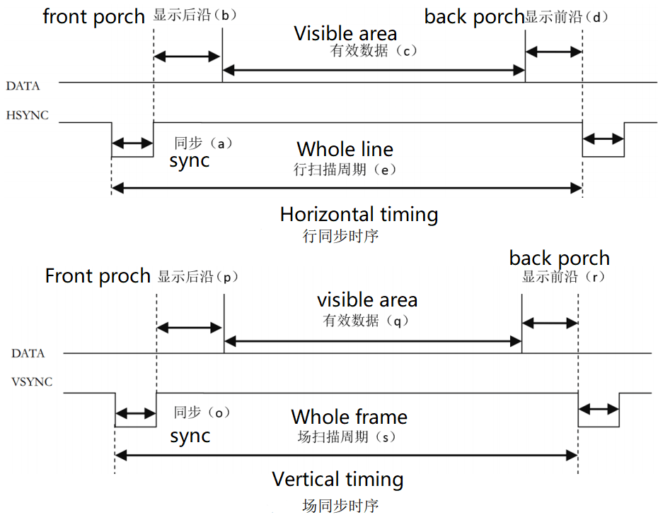
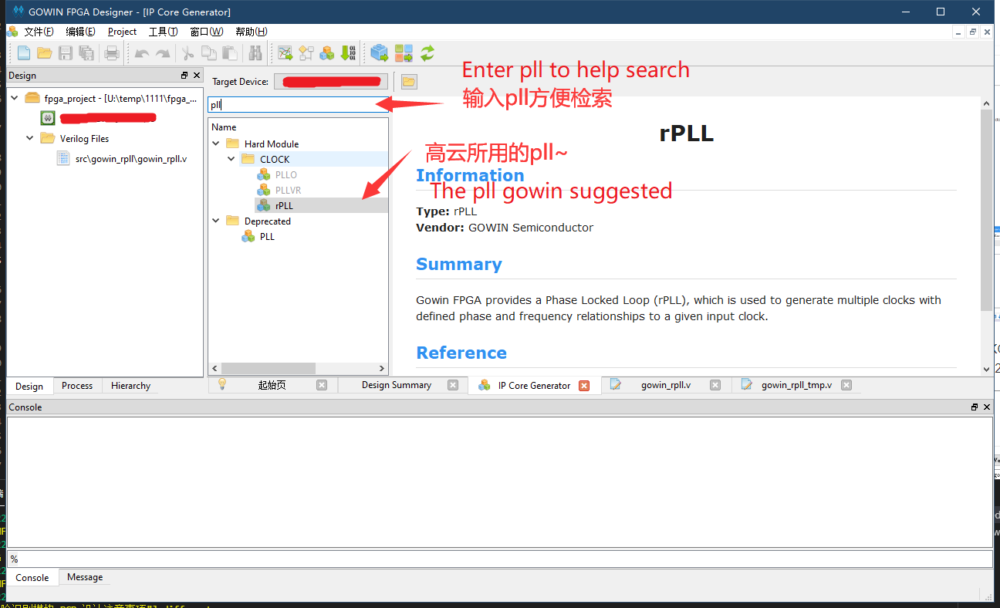
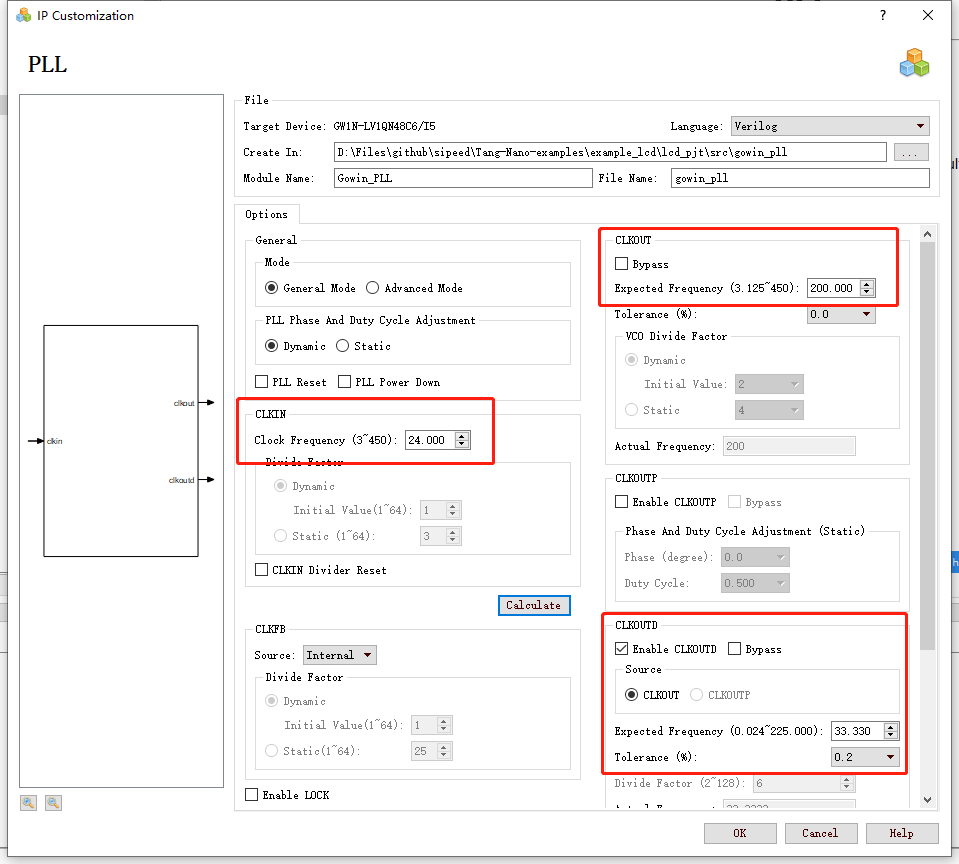
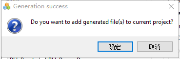
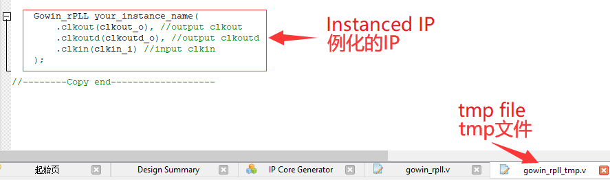
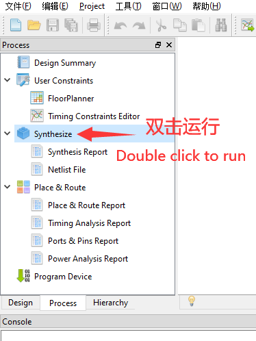
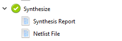
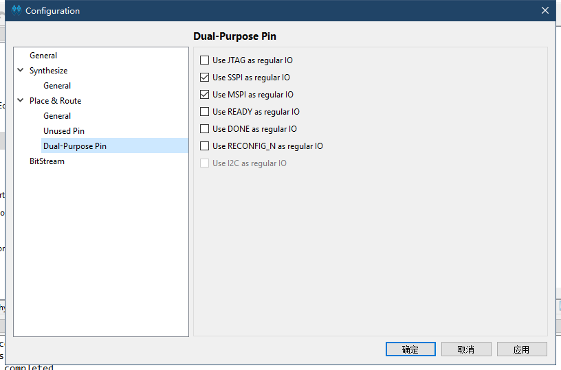

中文
中文RGB LCD 示例
编辑于2022.04.12
先介绍时序
RGB LCD 显示协议和 VGA 类似，通信都有专用的行同步、场同步信号线。它们的主要区别是前者传输用的是数字信号，后者传输走的是模拟信号。
下面就介绍 VGA 的时序

上图分别是 VGA 在数据传输中的行同步、场同步时序
从时序图中可以看出，不论是显示一行数据还是一列数据，都需要一个对应的同步(sync)信号，数据的传输在两个同步信号的脉冲之间完成
每一行的数据包括显示前沿(back porch)、有效数据(active video)、显示后沿(front porch)三个阶段
其中的有效数据就是我们常说的分辨率，而显示前后沿的参数需要参考具体的分辨率与帧数进行设置，相关参数可以参考典型参数，链接在此： http://www.tinyvga.com/vga-timing
这块5寸屏幕的控制时序略有不同，相关参数的设置可以查看规格书
其他尺寸的屏幕相关规格书均可以在这里下载 点我
下面为这块 LCD 时序相关的截图


上面一张图是时序中的参数表，下面的图是时序图
从时序图中看出，这块屏幕可以不用设置前后沿，可以只设置消影(blanking)时间，通过实际的程序证明，两种方式都是可以的
新建工程
新建工程方法参考自建点灯文章(点我)
生成屏幕时钟
- 这里需要用到高云半导体官方的IP核
板载的晶振时钟为 24MHz ，但是我们的屏幕要求 33.3MHZ 的时钟，所以我们需要使用对应的ip核来生成相应的时钟
pll
这里需要使用到 IP Core Generate ，位置在 Tools -> IP Core Generate

双击 rPLL ，在弹出窗口 language 选择 Verilog ，CLKIN 为 24MHz ，CLKOUT 为 200MHz，CLKOUTD 要选择 Enable，然后生成时钟为 33.33MHz，Tolerance 选择 0.2%

点击ok后提示是否需要添加到当前工程，此时应当选择确定

接着会出现一个例化的tmp文件，用来例化所设置的ip。比如下图中例子

osc
这一步可以不做
系统的时钟可以由外部时钟提供，也可以使用 OSC 生成的时钟
同样也是使用 IP Core Generate
找到 OSC 并双击打开进行分频的设置
在帮助页面可以知道，GW1N-1 系列的 fpga 的 OSC 是从 240MHz 进行分频的，所以要产生 24MHz 的时钟，只需要进行 10 的分频
屏幕驱动代码
- 首先新建一个额外的verilog文件来保存下面要编写的代码
端口定义
首先需要先定义出驱动屏幕所需要的端口
module VGAMod
(
input CLK,
input nRST,
input PixelClk,
output LCD_DE,
output LCD_HSYNC,
output LCD_VSYNC,
output [4:0] LCD_B,
output [5:0] LCD_G,
output [4:0] LCD_R
);
本例程使用RGB565作为驱动方式；
时序常量
接着定义出时序图上所要求的常量
localparam V_BackPorch = 16'd6; //0 or 45
localparam V_Pluse = 16'd5;
localparam HightPixel = 16'd480;
localparam V_FrontPorch= 16'd62; //45 or 0
localparam H_BackPorch = 16'd182;
localparam H_Pluse = 16'd1;
localparam WidthPixel = 16'd800;
localparam H_FrontPorch= 16'd210;
localparam PixelForHS = WidthPixel + H_BackPorch + H_FrontPorch;
localparam LineForVS = HightPixel + V_BackPorch + V_FrontPorch;
首先是设置时序相关的参数：前沿、后沿、有效像素
关于显示前沿、后沿，前面也说了，可以合并为一个消影时间，就是可以把其中一个设置为0，另一个设置为消影时间。反正前后沿的时间加起来符合表中的时间要求就可以
定义变量
- 定义一些变量能够容易编写程序
reg [15:0] LineCount;
reg [15:0] PixelCount;
reg [9:0] Data_R;
reg [9:0] Data_G;
reg [9:0] Data_B;
同步信号
这段代码产生同步信号，需要注意的是，这块屏幕的同步信号是负极性使能
always @( posedge PixelClk or negedge nRST )begin
if( !nRST ) begin
LineCount <= 16'b0;
PixelCount <= 16'b0;
end
else if( PixelCount == PixelForHS ) begin
PixelCount <= 16'b0;
LineCount <= LineCount + 1'b1;
end
else if( LineCount == LineForVS ) begin
LineCount <= 16'b0;
PixelCount <= 16'b0;
end
else
PixelCount <= PixelCount + 1'b1;
end
always @( posedge PixelClk or negedge nRST )begin
if( !nRST ) begin
Data_R <= 9'b0;
Data_G <= 9'b0;
Data_B <= 9'b0;
end
else begin
end
end
//注意这里HSYNC和VSYNC负极性
assign LCD_HSYNC = (( PixelCount >= H_Pluse)&&( PixelCount <= (PixelForHS-H_FrontPorch))) ? 1'b0 : 1'b1;
assign LCD_VSYNC = ((( LineCount >= V_Pluse )&&( LineCount <= (LineForVS-0) )) ) ? 1'b0 : 1'b1;
使能信号
这段代码设置 LCD 使能图像显示，这块屏幕需要控制一个管脚用作显示开关，实际这个信号就是传输图像有效的那 800*480 的数据时置 1
assign LCD_DE = ( ( PixelCount >= H_BackPorch )&&
( PixelCount <= PixelForHS-H_FrontPorch ) &&
( LineCount >= V_BackPorch ) &&
( LineCount <= LineForVS-V_FrontPorch-1 )) ? 1'b1 : 1'b0;
//这里不减一，会抖动
测试彩条
- 这段代码用来产生 LCD 的测试数据，产生彩条显示
localparam Colorbar_width = WidthPixel / 16;
assign LCD_R = ( PixelCount < ( H_BackPorch + Colorbar_width * 0 )) ? 5'b00000 :
( PixelCount < ( H_BackPorch + Colorbar_width * 1 )) ? 5'b00001 :
( PixelCount < ( H_BackPorch + Colorbar_width * 2 )) ? 5'b00010 :
( PixelCount < ( H_BackPorch + Colorbar_width * 3 )) ? 5'b00100 :
( PixelCount < ( H_BackPorch + Colorbar_width * 4 )) ? 5'b01000 :
( PixelCount < ( H_BackPorch + Colorbar_width * 5 )) ? 5'b10000 : 5'b00000;
assign LCD_G = ( PixelCount < ( H_BackPorch + Colorbar_width * 6 )) ? 6'b000001:
( PixelCount < ( H_BackPorch + Colorbar_width * 7 )) ? 6'b000010:
( PixelCount < ( H_BackPorch + Colorbar_width * 8 )) ? 6'b000100:
( PixelCount < ( H_BackPorch + Colorbar_width * 9 )) ? 6'b001000:
( PixelCount < ( H_BackPorch + Colorbar_width * 10 )) ? 6'b010000:
( PixelCount < ( H_BackPorch + Colorbar_width * 11 )) ? 6'b100000: 6'b000000;
assign LCD_B = ( PixelCount < ( H_BackPorch + Colorbar_width * 12 )) ? 5'b00001 :
( PixelCount < ( H_BackPorch + Colorbar_width * 13 )) ? 5'b00010 :
( PixelCount < ( H_BackPorch + Colorbar_width * 14 )) ? 5'b00100 :
( PixelCount < ( H_BackPorch + Colorbar_width * 15 )) ? 5'b01000 :
( PixelCount < ( H_BackPorch + Colorbar_width * 16 )) ? 5'b10000 : 5'b00000;
当然在最后的驱动文件最后别忘记换行加上 endmodule
到这里驱动模块的编写已经完成了。
在顶层模块中例化
- 这里也是要新建verilog文件的
- 新建文件之后直接把下面的内容复制进去保存即可
module TOP //设置顶层模块
(
input nRST,
input XTAL_IN,
output LCD_CLK,
output LCD_HYNC,
output LCD_SYNC,
output LCD_DEN,
output [4:0] LCD_R,
output [5:0] LCD_G,
output [4:0] LCD_B
); // 列出需要的端口
wire CLK_SYS;
wire CLK_PIX;
//例化pll
Gowin_rPLL chip_pll(
.clkout(CLK_SYS), //output clkout //200M
.clkoutd(CLK_PIX), //output clkoutd //33.00M
.clkin(XTAL_IN) //input clkin
);
VGAMod VGAMod_inst //例化vga驱动
(
.CLK ( CLK_SYS ),
.nRST ( nRST ),
.PixelClk ( CLK_PIX ),
.LCD_DE ( LCD_DEN ),
.LCD_HSYNC ( LCD_HYNC ),
.LCD_VSYNC ( LCD_SYNC ),
.LCD_B ( LCD_B ),
.LCD_G ( LCD_G ),
.LCD_R ( LCD_R )
);
assign LCD_CLK = CLK_PIX;
endmodule
综合、约束、布局布线
综合
完成上面步骤后转到“Process”界面下，对编辑好的代码进行综合，即运行“Synthesize”

运行的结果如下图出现

说明前面编辑的代码无误；如果有错，根据错误提示进行改正即可。
管脚约束
对应的管脚约束如下表格所示；
关于管脚约束方法可以参考自建点灯文章(点我)里面的约束方法。
感觉麻烦的话也可以直接复制准备好的文件(点我)，将页面里的内容复制到工程目录里 .cst 文件中（如果没有.cst 文件那么自己新建一个物理管脚约束文件） 即可。
| PORT | PIN | PORT | PIN | PORT | PIN |
|---|---|---|---|---|---|
| LCD_CLK | 11 | nRST | 14 | XTAL_IN | 35 |
| LCD_B[4] | 45 | LCD_B[3] | 44 | LCD_B[2] | 43 |
| LCD_B[1] | 42 | LCD_B[0] | 41 | LCD_G[5] | 40 |
| LCD_G[4] | 39 | LCD_G[3] | 38 | LCD_G[2] | 34 |
| LCD_G[1] | 33 | LCD_G[0] | 32 | LCD_R[4] | 31 |
| LCD_R[3] | 30 | LCD_R[2] | 29 | LCD_R[1] | 28 |
| LCD_R[0] | 27 | LCD_DEN | 5 | LCD_SYNC | 46 |
| LCD_HYNC | 10 |
布局布线
管脚约束之后需要在设置里面开启引脚复用才能完成布局布线。
具体位置在 软件顶部菜单栏 Project -> Configuration -> Place&Route -> Dual-Purpose Pin

设置完上面的之后。
就可以开始布局布线(Place&Route)了。
完成后就可以给开发板验证代码内容了。
烧录
布局布线结束后生成比特流，就可以烧录开发板了。
结束
上面差不多叙述了所有代码。
整个工程可以参考 这里